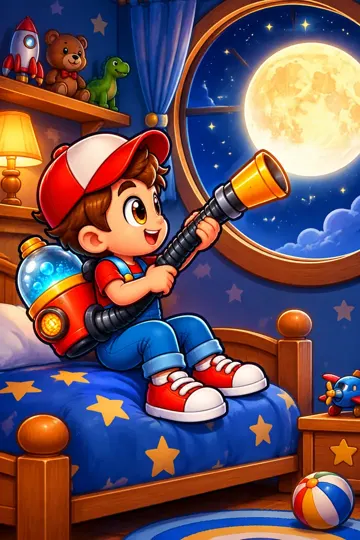

۱داستان در یک خط

آرزو: بچه میخواهد ماه را با جاروبرقیاش بگیرد.
مسیر: از خانهاش راه میافتد و از ۶ سرزمین رد میشود. هر سرزمین یک غول دارد که راه را بسته.
ابزار: موجودات کوچک را میمکد → سکه → جاروبرقی قویتر → غول را میگیرد.
چیزی که میسازد: کنار خانه یک موشک ساخته میشود؛ هر غول = یک قطعه.
پایان: موشک کامل میشود، پرتاب، و آخرین غول خود ماه است.
رقیب: یک پسر شیطون با کلاه بنفش که او هم میخواهد زودتر به ماه برسد.
هیچ متنی در بازی نیست — همه با تصویر